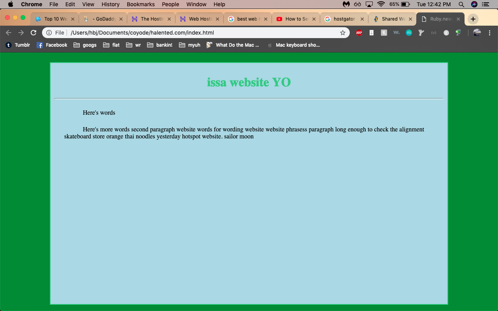

Ruby.new("bie")
Making a Site!
Now, this blog will primarily be about Ruby and how you can use that amazing language to accomplish really amazing things, or really silly things, or what have you. But for the first post here I’ll be detailing what it takes to build a site, because that’s what took up the large part of my spare time for this week.
Also because it’s interesting. A friend of mine used to say, “You should never ignore a curious urge, a creative urge, or an urge to brush your teeth.” You really can't go wrong with that one.
The steps I took to building a website were a little haphazard, as self-teaching tends to be. The first thing I did was purchase a domain, from the only domain-purchasing site I knew offhand, GoDaddy.com. I wish I’d chosen a different one, but I was excited at the idea of getting started so I just went with it. Daddy is just such a terrible word.
Regardless, I have a domain. What’s next? Youtube videos. I watched a few different 20-minute submissions on how to start a website from scratch using HTML and CSS. I think I got a pretty good handle on how to put up some boxes with text and solid colors.
Ugly, but functional. It was fun to fiddle with the alignment, font size, coloration, etc. Heartbreakingly, coding Curlz MT in the following manner into my style.css file did not have the desired result: p { font-famiy:”Curlz MT”; }
We’ll figure that out later though. I WILL have Curlz MT on my website. The next big issue arose with the question: How do I upload the HTML and CSS files that I wrote to my domain?
Now, a lot of people are going to tell you that you Must Pay For Web Hosting, but they are only saying that cause they hate to see you have a good time. After a few hours of web searching and some useful conversations with a colleagues (shoutout to Scott S. & Ethan R.), I found a tidy, informative post from Kirsten Swanson which detailed exactly how to set up my new GoDaddy domain using web hosting from our good friend GitHub.
And there we have it. My unappealing child is born.
Here are a few fun things I learned about HTML along the way:
• How to insert a pic!
The lineup here is fairly self-explanatory —begin with the typical HTML arrow, followed by “img” to indicate you’re about to point to an image, the “source” of the image (or where to find it), and the alternative text for the image, or “alt.”
• How to insert a URL!
This one starts with the arrow, the letter “a” to indicate…..that you are about to put A Link I suppose, and then “href.” At first glance, that looks like some nonsense magic word, but as with all programming, it is sorely non-magical at its core. “Href” stands for Hypertext REFerence, a simple signpost that will point you to another Hypertext address — that is to say, another web address beginning with HTTP or HTTPS.
• How to insert a code snippit!
One thing I did NOT figure out, was how to make the background for the text box actually reflect the size of the text I entered. Little by litte, as they say.